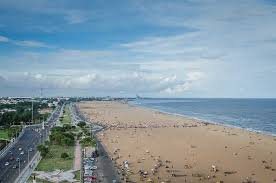
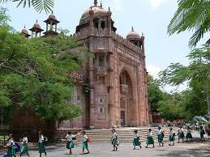

| VISITING PLACES |
| Name |
Origin |
IMAGE |
| MARINA BEACH
| CHENNAI (TAMILNADU)
|  |
| The Marina is a natural urban sandy beach along the Coramandel coast on the Bay of Bengal. Primarily sandy, the beach spans about 13 km (8.1 mi), running from near Fort St. George in the north to Besant Nagar in the south and is the longest natural urban beach in India. |
Demarcated 1884 |
Place 1 |
| CHENNAI (TAMILNADU)
| KATTUBAVA MOSQUE
|  |
| The Kattubava Mosque or Kattubava Pallivasal situated in Pudukkottai district is an important Islamic pilgrimage centre. It is located 30 kilometres from Pudukkottai on the Thirumayam-Madurai highway. It is famous for its urs which occurs in the month of Rabiyul Ahir. |
Since 18th century. |
Place 2 |
| CHENNAI (TAMILNADU)
| SHORE TEMPLE
|  |
| The shore temple is a structural temple, built with blocks of granite, dating from the 8th century AD. It was built on a promontory sticking out into the Bay of Bengal at Mahabalipuram, a village south of Chennai in the state of Tamil Nadu in India. |
Built in(700-728) ad. |
Place 3 |
| NATIONAL ART GALLERY
| CHENNAI (TAMILNADU)
|  |
| The National Art Gallery[1] situated in Egmore, Chennai, is one of the oldest art galleries in India. Constructed with red stones sourced from Satyavedu in Andhra Pradesh,Indo-Sarsenic architecture and houses paintings from Thanjavur, Rajasthan, Kangra and Deccan areas, as well as sandalwood sculptures. |
Since 1960 |
Place 4 |
| VICTORIA MEMORIAL HALL
| CHENNAI (TAMILNADU)
|  |
| Victoria Public Hall, or the Town Hall, is a historical building in Chennai, named after Victoria, Empress of India. It is one of the finest examples of British architecture in Chennai and was built to commemorate the golden jubilee of Queen Victoria. |
Since 1880 |
Place 5 |
| RIPON BUILDING
| CHENNAI (TAMILNADU)
|  |
| The Ripon Building is the seat of the Chennai Corporation in Chennai , Tamil Nadu. It is a fine example of the Neoclassical style of architecture, a combination of Gothic, Ionic and Corinthian. The Ripon Building is an all-white structure and is located near the Chennai Central railway station. |
Since 1913 |
Place 6 |